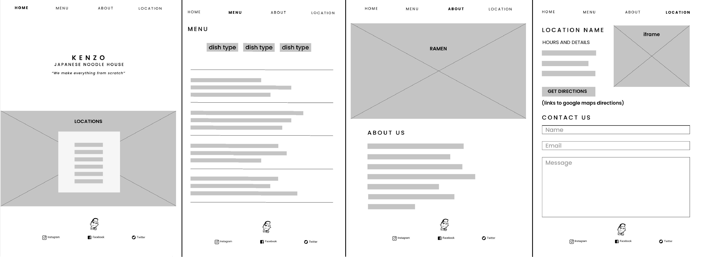
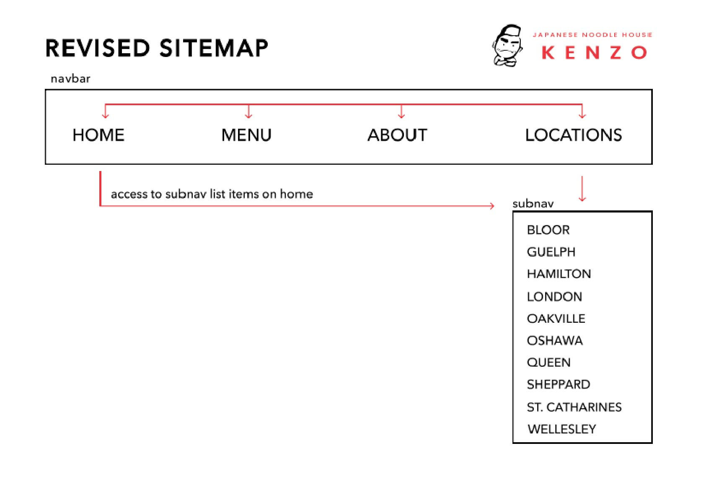
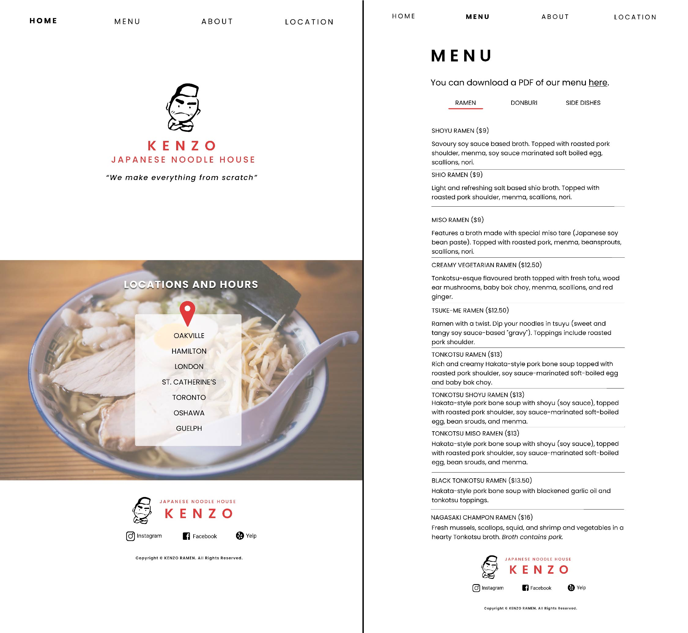
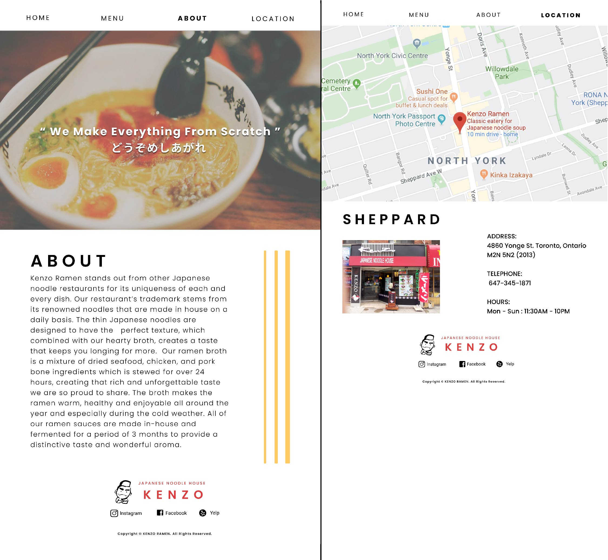

Overview:
For my HTML and CSS class, our class project was to redesign a current website that needed updating. We would be updating the visual design and the responsiveness of the website made for laptop and mobile screens. My team chose to redesign the Kenzo Ramen website, a ramen franchise around Ontario.

The whole team helped create the HTML and CSS, but we also had secondary roles. My secondary role was to update the colour palettes, fonts used, and how the overall site is going to look. Karen, the manager oversaw the project, help where was needed and set up group meetings. Amanda created the wireframes for the usability of the website. Anna’s role was to put our HTML and CSS together while checking for any problems.
Problem:
1. Outdated design
2. More content than needed
3. Confusing usability and design layout / does not work for mobile

Target Audience:
Our target audience is for customers who would like to scope out what the restaurant is about easily and leave with having their questions answered. This would potentially attract them to dine at the restaurant.
Check Points:
1. Strategic analysis
2. Wireframes
3. Mockups
4. Feedback from the professor and classmates
5. Dividing HTML and CSS work
6. Putting HTML and CSS together for a working demo
7. Demo day to the class


Outcome:
My team was able to strip out any content or fancy navigations and select what was most important to add into the new site. The site is more modern by being simple in the colour palettes and the navigations adaptable to mobile.


Takeaway:
This was my first experience in creating visual mockups for a website. I saw where the guideline and spacing from graphic design can help with the CSS portion of web design. This was interesting as I could apply a type of design I have done before into another type of design.
For a project of this size, asking for help from team members, when needed is OK. I had some frustration from trying to understand how parts of CSS worked and why I could not fix my problems. I have learned that it is much better to struggle together on a problem because other team members
are going to have the same problems and it reduces the time to find a solution.